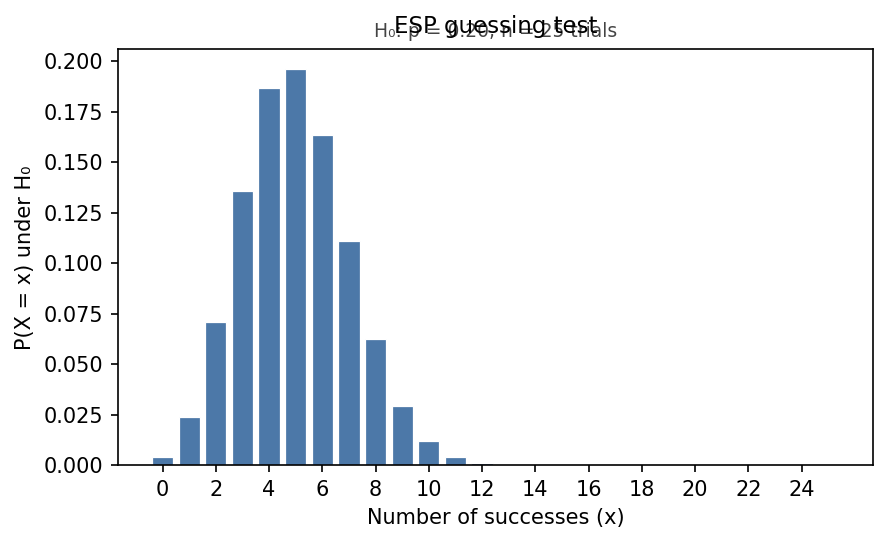
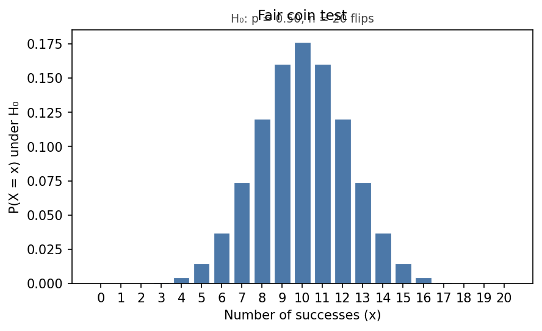
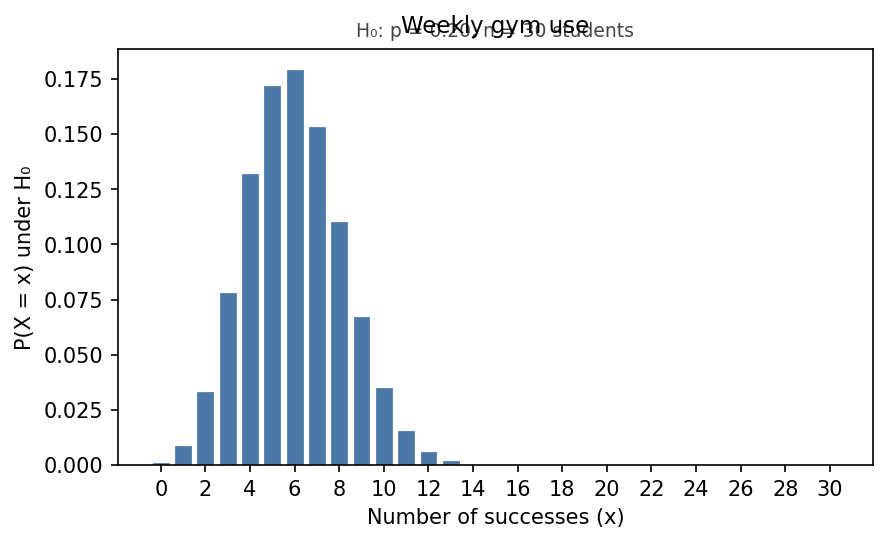
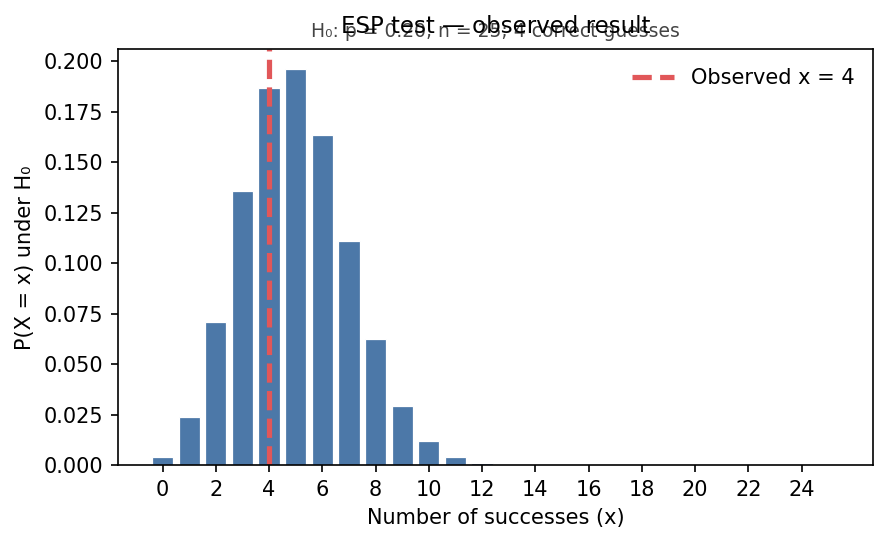
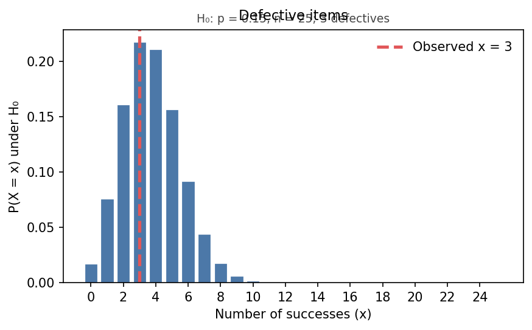
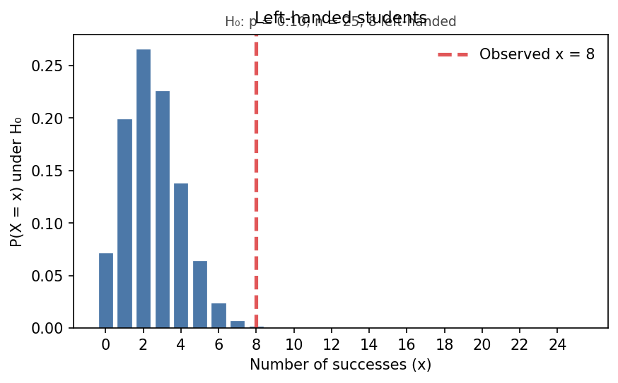

Module 1 — Quiz B (Concept Check)
Question bank · After Read 2 · open notes · unlimited attempts
Module 1, Quiz B: Concept check
Reading: Module 1 Read 2 (complete Read 1 + Quiz A first)
Canvas: Concept Check quiz (Module 1)
Binomial test skills from Read 2: translate research questions to \(H_0\) and \(H_a\); identify \(n\), null \(p\), and observed \(x\) in context; check BRP conditions; read null distributions and cumulative tails; interpret p-values and conclusions; one- vs two-sided shading. R and ggplot workflow items are on the Synthesis bank after the demo lab.
Excluded from Module 1: Bayes’ rule — optional enrichment only (not on the course path).
Section A — Research questions and hypotheses (Read 2 §1)
A1. Left-handed students
At a school, 25 students are surveyed. The national rate of left-handedness is 10%. The research question is: Is the proportion of left-handed students at this school higher than 10%?
Let \(p\) = proportion of students at this school who are left-handed.
- Write \(H_0\) and \(H_a\) in symbols.
- In one sentence each: what does \(H_0\) claim? What does \(H_a\) claim?
A2. ESP test hypotheses
An online ESP test uses 5 symbols per trial. A student takes 25 trials. Let \(p\) = probability of a correct guess on one trial.
Write \(H_0\) and \(H_a\) for the claim “The student has ESP (does better than guessing).”
A3. Describe \(p\) in context
A quality team tests whether the proportion of defective items from a new supplier is less than 15%. They inspect 25 items.
In one complete sentence, define the parameter \(p\) in the context of this study.
A4. Null vs alternative
Which statement belongs in the null hypothesis \(H_0\) for a binomial test about a proportion \(p\)?
- \(p > 0.20\)
- \(p = 0.20\)
- \(p \neq 0.20\)
- The data show \(p\) is too high
A5. Two-sided coin test
A student claims a coin is not fair (not 50% heads). They flip it 20 times and count heads. Let \(p\) = probability of heads on one flip.
Write \(H_0\) and \(H_a\) for a two-sided test.
A6. Gym use (harder)
Research question: Do more than 20% of students at our school use the gym at least once per week? A random sample of 30 students is surveyed; 9 say yes.
- Write \(H_0\) and \(H_a\).
- Is this one-sided or two-sided? Which direction?
Click to reveal answers — Section A — Research questions and hypotheses (Read 2 §1)
\(H_0: p = 0.10\) vs \(H_a: p > 0.10\). \(H_0\): the school rate equals the national 10%. \(H_a\): the school rate is greater than 10%.
\(H_0: p = 0.2\) (or \(1/5\)) vs \(H_a: p > 0.2\). Under \(H_0\) the student is guessing; under \(H_a\) they beat chance.
\(p\) is the proportion of items from this supplier that are defective (on one item / in the long run for this process).
b) \(H_0\) always uses an equality (here \(p = 0.20\)). Inequalities go in \(H_a\).
\(H_0: p = 0.5\) vs \(H_a: p \neq 0.5\). Two-sided because “not fair” means different from 0.5 in either direction.
\(H_0: p = 0.20\) vs \(H_a: p > 0.20\). One-sided, right tail (looking for evidence the rate exceeds 20%).
Section B — Identify \(n\), \(x\), and \(p\) (Read 2 §1–2)
B1. \(n\) and \(x\) from a word problem
A researcher surveys 30 students; 12 report owning a bicycle. The binomial count is “owns a bicycle” on each student.
- What is \(n\)?
- What is the observed count \(x\)?
- What is \(\hat{p}\)?
B2. \(p\) under \(H_0\)
Scenario: At a school, 25 students are surveyed. The national rate of left-handedness is 10%. You test \(H_0: p = 0.10\) vs \(H_a: p > 0.10\) and will build the null distribution \(f(x) = P(X = x)\) under \(H_0\) with \(n = 25\) trials.
What value of \(p\) belongs in the binomial formula for that null bar chart? Why (one short phrase)?
B3. Observed \(x\) in ESP test
ESP test: 25 trials, 6 correct guesses. Under \(H_0: p = 0.2\):
- What is \(n\)?
- What is the observed \(x\)?
- What is \(\hat{p}\)?
B4. \(\hat{p}\) vs null \(p\) (harder)
Scenario: A quality team tests whether the proportion of defective items from a supplier is less than 15%. They inspect \(n = 25\) items. \(H_0: p = 0.15\). They observe 3 defectives, so \(\hat{p} = 3/25 = 0.12\).
- Which value (0.12 or 0.15) goes into the formula for null bar heights \(P(X=x)\) under \(H_0\)?
- Which value describes what you observed in the sample?
B5. \(X\) vs \(x\)
Scenario: You plan \(n = 25\) independent trials and let \(X\) = number of successes before data are collected. After data collection you observe 8 successes.
- Which symbol is the random variable?
- Which value is the observed count you mark on the null plot with a vertical line?
B6. Fixed \(n\) before data
Scenario: Before collecting data, you decide to run exactly 25 independent trials (for example, 25 ESP guesses or 25 item inspections). You do not stop early or add trials based on results.
Why does fixed \(n\) matter for a binomial test? Which BRP condition does it support?
B7. Identify all three (harder)
Basketball player: Is her free-throw percentage greater than 70%? She takes 20 shots and makes 16.
Let \(p\) = probability she makes one free throw (long-run). State \(n\), observed \(x\), null \(p\) from \(H_0\), and \(\hat{p}\).
Click to reveal answers — Section B — Identify \(n\), \(x\), and \(p\) (Read 2 §1–2)
\(n = 30\); \(x = 12\); \(\hat{p} = 12/30 = 0.4\).
\(p = 0.10\) — use the null value from \(H_0\), not the observed \(\hat{p}\) from data.
\(n = 25\); \(x = 6\); \(\hat{p} = 6/25 = 0.24\).
Null bar chart: \(p = 0.15\) from \(H_0\). Observed: \(\hat{p} = 0.12\) (or \(x = 3\)).
\(X\) is the random variable (before data); \(x = 8\) is the observed count on the plot.
You must know the number of trials before collecting data; supports the fixed number of trials condition in a BRP.
\(n = 20\); \(x = 16\); null \(p = 0.70\) under \(H_0\); \(\hat{p} = 16/20 = 0.8\).
Section C — BRP conditions in context (Read 2 §1–2)
C1. State the four conditions
List the four BRP conditions in words (binary, fixed \(n\), fixed \(p\), independent trials).
C2. Drawing cards without replacement
You draw 10 cards without replacement from a deck and count kings. Which BRP condition fails? Explain in one sentence.
C3. ESP open deck
ESP test: 25 trials, 5 symbols, computer randomizes each trial independently; open deck so each symbol has probability \(1/5\) every trial.
Name two BRP conditions and explain briefly why each holds here.
C4. Survey without replacement
A class has 40 students. You sample 10 without replacement and count how many commute by bike. Is this a standard BRP for testing a population proportion? Yes or no, and one reason.
C5. Independent coin tosses
Fair coin tossed 15 times; count heads. For a binomial model, explain why independent trials is reasonable.
C6. Which study is binomial? (harder)
Which setup is best modeled as a BRP for a binomial test?
- Flip a bent coin 20 times; the bend gets worse after each flip.
- 25 independent ESP guesses with fixed chance \(0.2\) under \(H_0\).
- Count rain days in July until the first dry day, then stop.
Click to reveal answers — Section C — BRP conditions in context (Read 2 §1–2)
Binary outcome each trial; fixed number of trials \(n\); same success probability \(p\) on each trial; independent trials.
Fixed \(p\) (and often independence): the probability of a king changes as the deck changes.
e.g. Binary (correct/incorrect); fixed \(n = 25\); fixed \(p = 0.2\) under \(H_0\); independent trials (random each time).
No (or only approximate): sampling without replacement changes \(p\) slightly between draws; trials are not fully independent with fixed \(p\).
One toss does not change the chance of heads on the next; outcomes are separate random trials.
b) Fixed \(n\), binary, fixed \(p\), independent trials. (a) \(p\) changes; (c) \(n\) not fixed.)
Section D — Null distribution, graphs, and cumulative probability (Read 2 §2–3)
D1. Most likely value of \(x\)
Under \(H_0\), \(X \sim \text{Binomial}(n=10, p=0.5)\). The null bar chart shows \(P(X=x)\) for each \(x\).
At which \(x\) is the tallest bar (most likely count)? Why (one phrase: mean or symmetry)?
D2. Center of null plot
Under \(H_0: p = 0.2\), \(n = 25\), where is the center of the null distribution approximately? Compute \(\mu = np\).
D3. \(P(X \geq x)\) as sum of bars
Null distribution for \(n = 10\), \(p = 0.4\). You shade the right tail for \(H_a: p > 0.4\) at observed \(x = 7\).
Write \(P(X \geq 7)\) as a sum of pmf values \(f(7) + f(8) + \cdots\) (use \(f(x)\) notation).
D4. Lower tail cumulative
Scenario: Defective items: \(H_0: p = 0.15\), \(H_a: p < 0.15\), \(n = 25\) items inspected, observed 3 defectives. The p-value uses the left tail.
Write the p-value as \(P(X \leq 3)\) using a sum of bars. Which \(x\) values are included?
D5. Two-sided sum (harder)
Two-sided test: \(H_0: p = 0.5\), \(n = 20\), observed \(x = 3\) (unusually low). Name the two sets of \(x\) values whose bar heights you would add for a two-sided p-value (qualitative — no calculation).
D6. Reading a null plot
A null bar chart under \(H_0\) shows \(f(4)\) is the largest bar and bars taper for \(x = 0,1,2,3\) and \(x = 5,6,\ldots\).
If you observe \(x = 8\), is that toward the right tail relative to the peak? Yes or no.
D7. Bar height on null plot
Scenario: Under \(H_0: p = 0.20\) with \(n = 25\) trials, the null bar chart shows \(f(x) = P(X = x)\) at each \(x\).
What does \(f(4)\) represent on that plot?
Click to reveal answers — Section D — Null distribution, graphs, and cumulative probability (Read 2 §2–3)
\(x = 5\) (center at \(np = 5\); symmetric when \(p = 0.5\)).
\(\mu = np = 25(0.2) = 5\) — counts near 5 are most likely under \(H_0\).
\(P(X \geq 7) = f(7) + f(8) + f(9) + f(10)\) where \(f(x) = P(X = x)\) under \(H_0\).
\(P(X \leq 3) = f(0) + f(1) + f(2) + f(3)\) under \(H_0\) with \(p = 0.15\).
Counts as extreme as 3 toward low (\(0,1,2,3\) or \(\leq 3\)) and counts equally extreme on the high side (mirror: \(\geq 17\) if symmetric rule, or both tails away from center).
Yes — 8 is far to the right of the peak at 4 (right-tail direction for “more successes than null expects”).
\(f(4) = P(X = 4)\) — the height of the bar at \(x = 4\) under the null model.
Section E — p-value meaning and conclusions (Read 2 §2–3)
E1. Small p-value
Scenario: A binomial test about whether a school’s left-handed rate exceeds 10% gives p-value = 0.02 for \(H_a: p > 0.10\).
In one sentence, what does that mean assuming \(H_0\) is true?
E2. Large p-value
Scenario: ESP test with 5 symbols, 25 trials, under \(H_0: p = 0.2\). P-value = 0.76 for \(H_a: p > 0.2\).
Do the data provide strong evidence for ESP? Fail to reject or reject \(H_0\)? One sentence conclusion.
E3. Common mistake
A student says: “The p-value is 0.04, so there is a 4% chance \(H_0\) is true.” Is that correct? If not, give the correct interpretation in one sentence.
E4. Interpret in context
Left-handed study: \(H_0: p = 0.10\), \(H_a: p > 0.10\), \(n = 25\), observed \(x = 6\), p-value = 0.03. Write a conclusion about the research question (not “accept \(H_a\)” as proof).
E5. Compare p-values (harder)
Scenario: Two studies use the same \(H_0\), \(H_a\), and \(n\). Study A: p-value = 0.001. Study B: p-value = 0.45.
Which provides stronger evidence against \(H_0\)? Which observed count is more unusual under \(H_0\)?
E6. Conclusion language
Which conclusion is appropriate after p-value = 0.08?
- Accept \(H_0\) as proven true.
- Fail to reject \(H_0\); data are consistent with \(H_0\).
- Accept \(H_a\) with 92% certainty.
E7. Right-tail p-value setup
Gym study: \(H_0: p = 0.20\), \(H_a: p > 0.20\), \(n = 30\), \(x = 9\). Write the p-value as a probability statement about \(X\) under \(H_0\).
E8. Full mini-conclusion (harder)
Defective items: \(H_0: p = 0.15\), \(H_a: p < 0.15\), \(n = 25\), \(x = 3\), p-value = 0.22. Is the defect rate convincingly below 15%? One-sentence conclusion.
Click to reveal answers — Section E — p-value meaning and conclusions (Read 2 §2–3)
If \(H_0\) were true, there is only a 2% chance of seeing a count as or more extreme as the observed data toward \(H_a\).
No strong evidence for ESP; fail to reject \(H_0\) — the observed count is plausible if guessing only.
Incorrect. The p-value is the chance of data at least this extreme given \(H_0\), not \(P(H_0 \text{ true})\).
There is statistically significant evidence the school’s left-handed rate exceeds 10% (unusual under \(H_0\)); reject \(H_0\) at this level.
Study A (0.001) — smaller p-value, more unusual under \(H_0\).
b) We never “accept \(H_0\)” or “prove” either hypothesis — insufficient evidence to reject \(H_0\).
p-value \(= P(X \geq 9 \mid H_0)\) with \(X \sim \text{Binomial}(30, 0.20)\).
No — fail to reject \(H_0\); p-value 0.22 is large, so 3 defectives (or fewer) is not strong evidence the rate is below 15%.
Section F — Test workflow and tail direction (Read 2 §3)
F1. Order the steps
Number these binomial-test steps 1–4 in the order used in Read 2:
- (A) Verify the four BRP conditions.
- (B) State research question, \(p\), \(H_0\), \(H_a\); identify \(n\) and null \(p\).
- (C) Plot null distribution (bar chart of \(P(X=x)\) under \(H_0\)).
- (D) Collect \(x\), mark observed value on the plot, shade tail(s), compute p-value, conclude.
F2. One- vs two-sided shading
- \(H_a: p > 0.2\): shade one or both tails?
- \(H_a: p \neq 0.5\): shade one or both tails?
F3. Which tail?
Basketball: \(H_0: p = 0.70\), \(H_a: p > 0.70\), observed \(x = 18\) of \(n = 20\). For the p-value, do you sum bars for \(P(X \geq 18)\) or \(P(X \leq 18)\)?
F4. P-value as probability
Scenario: ESP test: \(H_0: p = 0.20\), \(H_a: p > 0.20\), \(n = 25\) trials, observed \(x = 7\) correct guesses.
Which expression equals the p-value (assuming \(H_0\) is true)?
F5. Theory before data (harder)
Scenario: Before your Project 1 data arrive, you draw the milestone null bar chart under \(H_0\) (you do not yet know the final observed \(x\)).
Why should that null plot be drawn before you know your final observed \(x\)? Tie to the “world we imagine” idea in one or two sentences.
Click to reveal answers — Section F — Test workflow and tail direction (Read 2 §3)
1=B, 2=A, 3=C, 4=D (plan before data; null plot before observed \(x\)).
- One tail (right). 2. Both tails.
\(P(X \geq 18)\) — right tail matching \(p > 0.70\).
\(P(X \geq 7)\) where \(X \sim \text{Binomial}(25, 0.20)\) — right tail toward \(H_a\).
Good science plans the model under \(H_0\) first; the null plot describes what counts are typical before seeing data, avoiding picking \(H_0\) after \(x\).
Section G — Null distribution plots (Read 2 §2–3)
G1. ESP null — most likely count

Scenario: An online ESP test uses 5 symbols per trial. Under the null hypothesis \(H_0: p = 0.20\) (random guessing), you plan \(n = 25\) independent trials and let \(X\) = number of correct guesses.
The figure shows the null distribution — bar height at each \(x\) is \(P(X = x)\) under \(H_0\).
At which value of \(x\) is the tallest bar (most likely count if \(H_0\) is true)?
G2. Coin null — most likely count

Scenario: A student tests whether a coin is fair. Under \(H_0: p = 0.50\) (probability of heads on one flip), they will flip the coin \(n = 20\) times and count heads.
The figure shows the null distribution under \(H_0\).
Which \(x\) has the highest bar?
G3. Gym null — center

Scenario: A school surveys \(n = 30\) students about weekly gym use. Under \(H_0: p = 0.20\) (20% use the gym), let \(X\) = number who say yes.
The figure shows the null distribution.
Approximate the center of the distribution (\(\mu = np\)). Which \(x\) is nearest the tallest bar?
G4. ESP — x = 4 vs null

Scenario: ESP test with \(n = 25\) trials and 5 symbols (guessing gives \(H_0: p = 0.20\)). A student gets 4 correct guesses (\(x = 4\)).
The figure shows the null distribution with a dashed vertical line at the observed \(x = 4\).
Is \(x = 4\) consistent with \(H_0\) (plausible near the center of the null plot)? Yes or no, with one phrase.
G5. ESP — x = 10 vs null
Scenario: An online ESP test uses 5 symbols per trial. Under \(H_0: p = 0.20\) (random guessing), \(H_a: p > 0.20\), you run \(n = 25\) independent trials. Observed \(x = 10\) correct guesses.
The figure shows the null distribution with a line at \(x = 10\).
Relative to the null distribution, is \(x = 10\) in the right tail (unusually high if \(H_0\) were true)? Yes or no.
G6. Defectives — x = 3 vs null

Scenario: A quality team tests whether the defect rate is below 15%. \(H_0: p = 0.15\), \(H_a: p < 0.15\), \(n = 25\) items inspected, \(x = 3\) defectives.
The figure shows the null distribution with a line at \(x = 3\).
Is the observed count plausible under \(H_0\) (not far in the left tail)? Yes or no.
G7. Left-handed — x = 8 vs null

Scenario: 25 students surveyed; national left-handed rate is 10%. \(H_0: p = 0.10\), \(H_a: p > 0.10\). Observed \(x = 8\) left-handed students.
The figure shows the null distribution with a line at \(x = 8\).
Is \(x = 8\) toward the right tail of the null plot (suggesting evidence for \(H_a\))? Yes or no.
Click to reveal answers — Section G — Null distribution plots (Read 2 §2–3)
The tallest bar is at \(x = 5\) (center at \(\mu = np = 25 \times 0.2 = 5\)).
\(x = 10\) (symmetric null with \(np = 10\)).
Center \(\mu = 30 \times 0.2 = 6\); the tallest bar is near \(x = 6\).
Yes — 4 is near the center (\(np = 5\)); not extreme for \(H_0\).
Yes — 10 is far to the right of the peak near 5; counts this high are rare under \(H_0\).
Yes — 3 is on the left side but still a reasonably likely count under \(p = 0.15\).
Yes — 8 is far above the center (\(np = 2.5\)); unusually high if \(H_0\) were true.